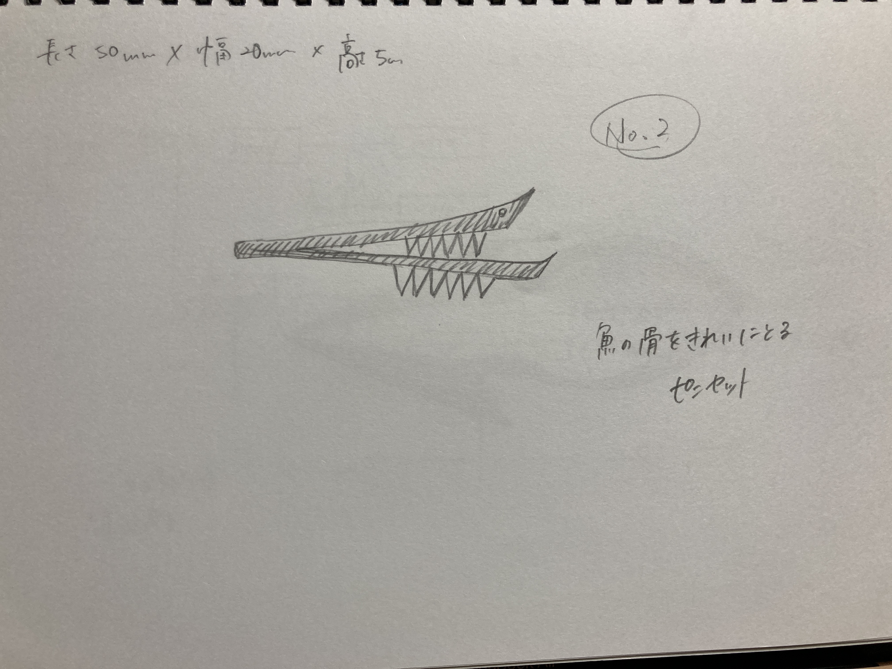
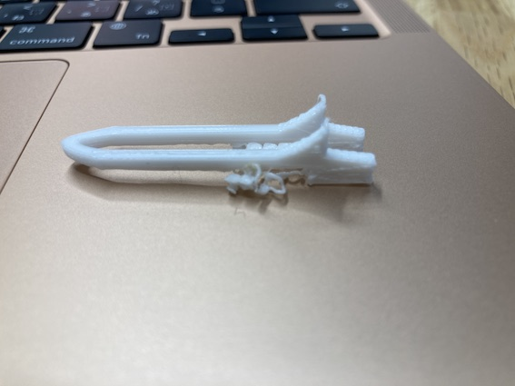
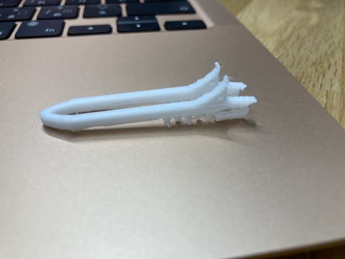

スケッチ・設計図

立体設計は下のリンクから
stl設計図
詳細
魚の骨を取りやすいように先端は、細長くしました。
骨付近の身を綺麗に取れるように、牙のような細かい刃先を側面煮詰めました。
上の部分を尖らせたのは、全体のビジュアルが魚のように見えるように作ってみました。
失敗作品
エントリーNo.1
土台を作らなくて失敗

土台を作らなかったことにより、牙の部分がうまく生成されず没になった。
エントリーNo.2
縦に作って失敗

土台を作ってみたけど、一部うまく土台ときりはなせなくて没になった。
使用例